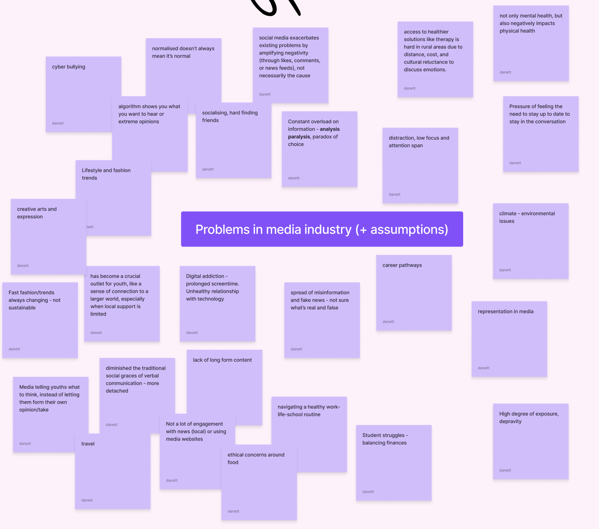
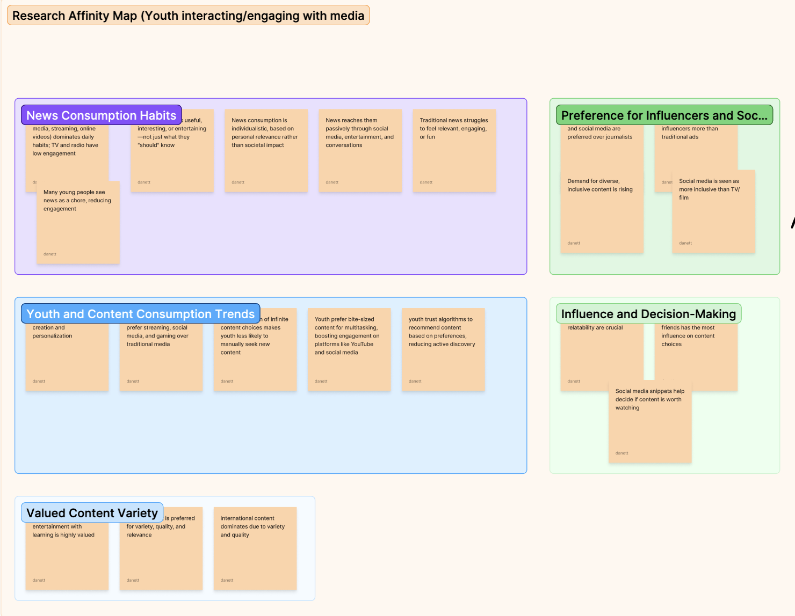
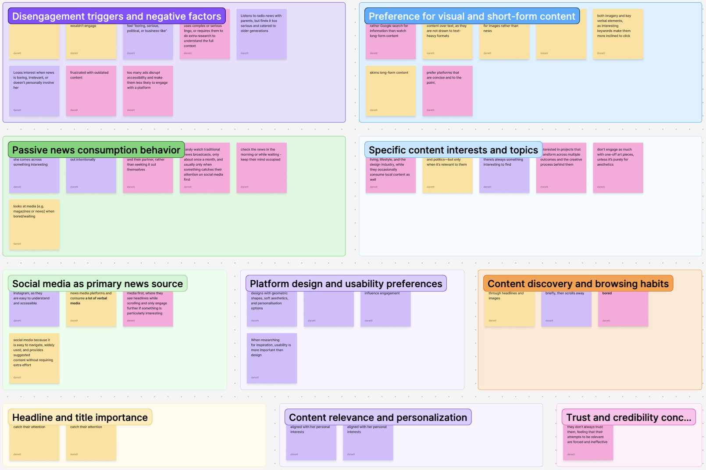
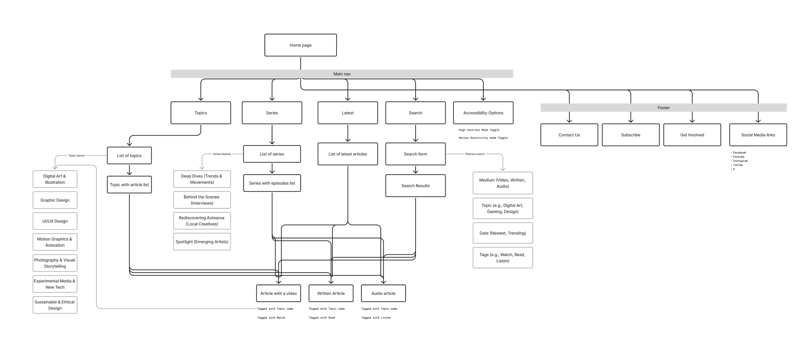
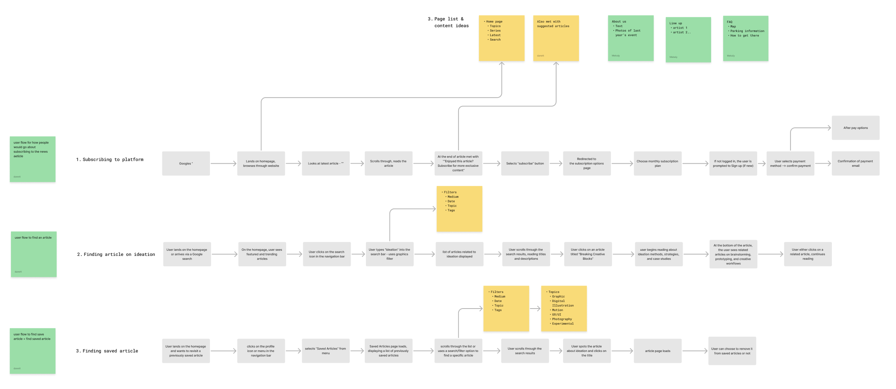
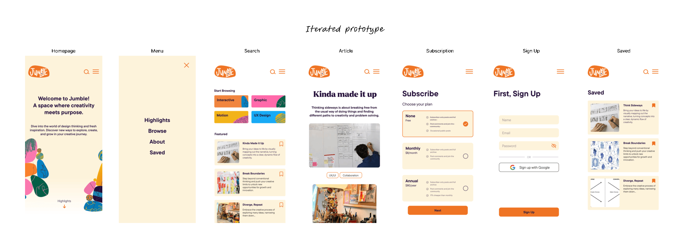
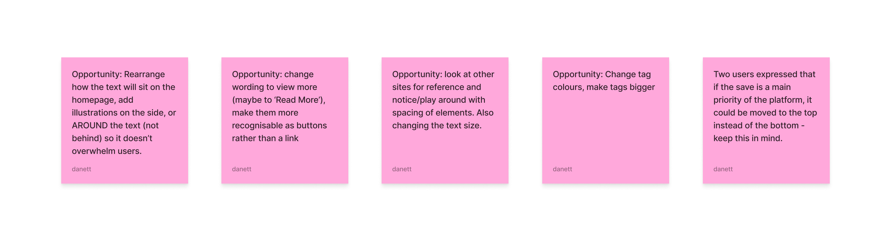
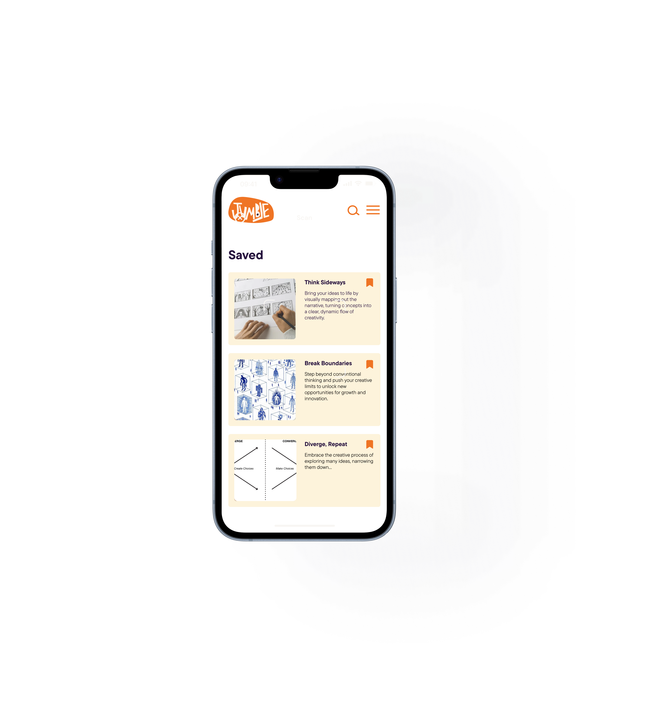

Challenge
Create and pitch a web-based media company that addresses a need from young people in Aotearoa New Zealand.
Challenge
Goals
DISCOVER
I approached this project by asking:
30%
Auckland’s food scraps still end up in landfill.
115,000 tonnes
of food waste end up in landfill
50%
of avoidable waste cut by proper bin use
And mapped my
assumptions
 
Define
Wanted to know more about the user, conducted a couple of in depth interviews on,
1. Their behaviours and habits on media platforms

2. Problems in media industry
Creative Block
Consuming large amounts of creative content is counterproductive to finding inspiration
Formality:
Intimidated by traditional media because it’s so wordy, too serious, lots of formal jargon
How might we...
PERSONA'S AND USER JOURNEY - CREATING IT AFTER UNDERSTANDING THE NEW QUESTION
Challenge
Goals
CONCEPTUALISE

Sitemap

Planning user flows
Ongoing user testing was conducted to keep the focus on the user and their needs, based on my key insights.


Opportunity areas identified and applied from user testing
OUTCOME
A coded responsive media platform with a focus on process and reflection, allowing creatives to share the messy realities of their creative journey through articles, reflections, and discussions. The platform challenges the perception of polished creative work by showcasing its messy process, fostering a more authentic and supportive creative community.
Onboarding process with their own personal bin to make it their own.

A prototype of the service app, and coded using VSCode.
A prototype of the service app, and coded using VSCode.


REFLECTION
this project made me realise I’m more interested in understanding people than designing interfaces. I became more drawn to the thinking behind user behaviour. What people do, why they do it, and how those patterns can inform better design decisions. Instead of focusing purely on the final output, I found myself valuing the process of research, observation, and uncovering insight.